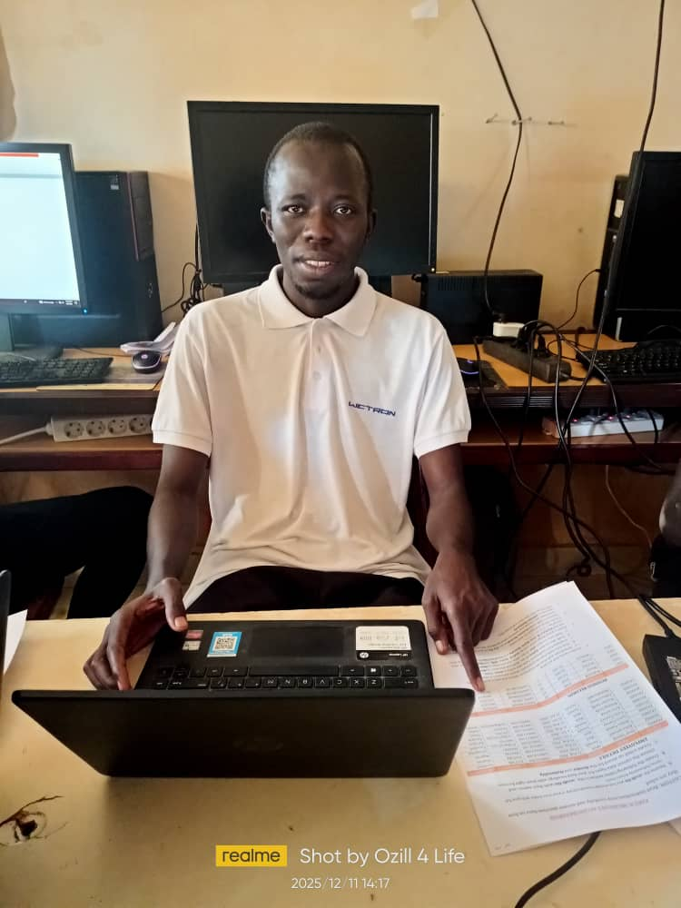

# About Me
My name is Sheikh Ceesay. I was born in a village called jockul, which is located within the Nyamina District. I spent my early childhood under the care and guidance of my parents, who played an important role in shaping my early education and development.

My parents were also the first people to introduce me to the Holy Qur’an. Under their guidance, I began learning the Qur’an from **An-Nas (Surah An-Nas)** and gradually progressed until I reached **Surah Qaf**. This marked the beginning of my Qur’anic education and my journey of learning about Islam.
I am the third child in my family. From my earliest years, my parents encouraged me to learn, develop good character, and remain committed to my education. Their guidance and support became an important foundation for the journey that followed in my life.
# My Childhood and Family Background
I spent my childhood under the loving care and guidance of my parents. My father was a Qur’anic teacher, and he played a very important role in my upbringing and education. He taught me the Qur’an and many important lessons about life. He also taught us how to communicate respectfully with other people, how to conduct ourselves in society, and the importance of having good character.
My father placed great emphasis on education, particularly Qur’anic education. I remember that some people would advise him to send his children to learn practical skills. However, my father would explain that he wanted his children to learn the Qur’an. His decision had a strong influence on me and became an important part of my life. I am deeply grateful to my father for the guidance, knowledge, and values he gave me. I will always appreciate his dedication to my education.
I also grew up with my brothers and sisters, some of whom are engaged in business while others work in different fields. Although we have followed different paths, my family has always been an important source of support for me. They have encouraged me in my studies and helped me in many ways throughout my educational journey.
While some of my brothers and sisters focused on business and other occupations, I chose to dedicate much of my time to learning. Education has always been very important to me, and I am grateful to my family for supporting me in pursuing it.
Looking back on my childhood, I can see how much my parents, particularly my father, influenced the person I am today. Their guidance, support, and commitment to my education laid the foundation for my continued journey of learning.